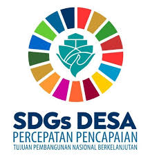
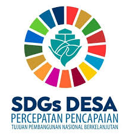

Sustainable Development Goals (SDGs) atau Tujuan Pembangunan Berkelanjutan adalah komitmen global dan nasional yang bertujuan untuk menciptakan dunia yang lebih baik, inklusif, dan berkelanjutan bagi seluruh manusia. SDGs mencakup 17 tujuan dan 169 target yang dideklarasikan oleh negara-negara maju maupun berkembang dalam Sidang Umum Perserikatan Bangsa-Bangsa (PBB) pada bulan September 2015. Agenda ini diadopsi sebagai bagian dari Agenda 2030 untuk Pembangunan Berkelanjutan, sebuah cetak biru ambisius untuk mengatasi tantangan besar dunia, seperti kemiskinan, ketidaksetaraan, perubahan iklim, degradasi lingkungan, konflik, dan ketidakadilan. Tujuan utama SDGs adalah memastikan keseimbangan antara pembangunan ekonomi, keadilan sosial, dan kelestarian lingkungan demi memastikan kesejahteraan generasi sekarang tanpa mengorbankan hak-hak generasi mendatang.
SDGs dirancang dengan prinsip inklusivitas, di mana tidak ada satu pun individu atau kelompok yang boleh tertinggal (leave no one behind). Agenda ini mengakui bahwa berbagai tantangan global saling berkaitan dan membutuhkan solusi yang terpadu serta kerja sama yang kuat antarnegara. Misalnya, pengentasan kemiskinan tidak hanya bergantung pada pertumbuhan ekonomi, tetapi juga pada pendidikan, kesehatan, kesetaraan gender, serta perlindungan terhadap sumber daya alam. Di sisi lain, upaya melawan perubahan iklim tidak dapat dipisahkan dari pengelolaan energi terbarukan dan pembangunan kota yang berkelanjutan.
Selain itu, SDGs menempatkan perdamaian, keadilan, dan kemitraan global sebagai landasan penting untuk mencapai tujuan-tujuan ini. Semua negara, baik maju maupun berkembang, memiliki tanggung jawab bersama untuk berkontribusi, meskipun tingkat kebutuhan dan kapasitasnya berbeda. Dengan visi yang holistik dan strategis, SDGs tidak hanya memberikan arah bagi kebijakan dan program pembangunan nasional, tetapi juga mendorong semua lapisan masyarakat, termasuk sektor swasta, akademisi, organisasi masyarakat sipil, dan individu, untuk terlibat aktif dalam mewujudkan tujuan ini. Pada intinya, SDGs adalah peta jalan menuju masa depan yang lebih adil, damai, dan berkelanjutan bagi seluruh penghuni planet.